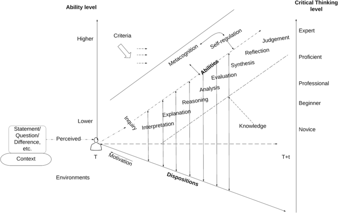

Can AI be used for academic critical thinking? A preregistered example¶
Authors (undecided list)
- Richèl J.C. Bilderbeek
- Apu Ramesh
- Johanna Söderström
Abstract¶
There is no doubt AI has changed the modern landscape. It's impact on academia is manifold, and in society more and more actors are relying on AI to provide insight and solve various problems. Crucially, higher education is about critical thinking, and the question is what kind of room is there for AI to support such activities, or indeed is AI a trojan horse or simply an echo chamber? Our paper asks: Can it do the critical thinking as required by academia, especially re-evaluating and judging the validity of an experiment? Here we test this on a paper where such a re-evaluation and judgment would help us judge its soundness and conclusion. We do so by guiding an AI to an expert level of critical thinking on that paper, in the process reproducing its results and judging its conclusion, assuming it will gullably agree on the conclusion of the academic paper. However, at that stage, we guide the AI through another line of thought, giving it the opportunity to re-evaluate and change its judgment on the soundness of the conclusions in the original paper. We find that ..., meaning that AI can/cannot be used as a virtual colleague able to help judge the soundness of an academic paper.
Of course, AI is very imprtand
Introduction¶
[JS: I think we need to separate our introduction from our Previous research section. I think RQ should be included in intro But structure of article will depend on journal we are submitting to. Do you have ideas there? do we want to go toward education or toward something more science focused? Most of the publications I find are situated in education, when I search for related topics]
There is no doubt that AI has become increasingly important. We see its use is politics, in teaching, in health care, in T, in X, and Y [references for each]. Amidst hopes that AI can help both science and society forward, we also see growing concerns that AI is used as a shortcut and that there are concerns that students are using AI to get a degree without an education [references]. [one paragraph that claims AI is important. and AI does stuff [reference].]
[JS: do you mean generative AI?]
To succeed in the 21st century, a human needs
21st century skills.
Critical thinking is one for the four most important 21st century
skills [Spector & Ma, 2019]. The question is if AI can support us
with this particular skill. [Critical thinking is important
paragraph]
In this paper, we test to what extent AI can deliver on critical
thinking. The goal of this paper is to measure the level of critical
thinking of an AI in the context of an academic paper,
following the framework of [Spector & Ma, 2019].
Assuming we can guide an AI to the highest level
of critical thinking, we determine how well it achieves
on the highest abilities (evaluation, synthesis, reflection and judgment)
needed to achieve this level.
To do so, we guide an AI to the highest level of critical thinking on an academic paper, following the storyline of that paper. First, we teach an AI the analysis of the paper and ask it to judge if the analysis is sound. Will it be gullible or will it point out already the same flaws that humans found? Second, we teach the AI an alternative line of thought, to make it re-evaluate the same analysis. Will it be able to change its judgment from some indirect hints from humans? [Research question paragraph]
Our paper is structured in this way, and overall the paper shows X. This is important because. [final paragraph of Intro]
AI is important¶
AI does stuff [reference].
test by Johanna
if you want to display more info about something, that is a placeholder for now you can use this
Critical thinking is important¶
To succeed in the 21st century, a human needs
21st century skills.
Critical thinking is one for the four most important 21st century
skills [Spector & Ma, 2019].
What are those 21st century skills?
These are:
- Collaboration
- Communication
- Creativity
- Critical thinking
These are also called 'the 4 C's' [Spector & Ma, 2019]
There are many definitions of critical thinking.
We use a definition that synergizes with the experiment presented in this
paper.
A common occurrence in these definitions for critical thinking
is their inspiration from the stages of Bloom's taxonomy [Bloom, 1956],
which are used in pedagogy to help formulate a teaching outcome
of the appropriate
level (e.g. [Chandio et al., 2016; Rutkowski et al., 2010]).
What are the 6 stages in Bloom's taxonomy?
- Knowledge
- Comprehension
- Application
- Analysis
- Synthesis
- Evaluation
A definition inspired by Bloom's taxonomy fits our experiment well, where we'll gradually 'educate' an AI, starting by providing knowledge and asking for an evaluation at a later stage.
An example of such is a definition is the one given by [Ennis, 2015],
which literally uses 4 out of 6 stages of Blooms taxonomy:
'Critical thinking is the intellectually disciplined process of actively and
skillfully conceptualizing, applying, analyzing, synthesizing, and/or
evaluating information gathered from, or generated by, observation,
experience, reflection, reasoning, or communication,
as a guide to belief and action.'.
Where the above definition shines in its simplicity and one-dimensionality,
it does not give guidelines on how to increase (or decrease)
the level of critical thinking.
For such guidelines, we found the framework of [Spector & Ma, 2019]
helpful to set up our experiment, even though it does not give a
quotable definition of critical thinking.
How does that framework look like?
Here is figure 1 from [Spector & Ma, 2019]:

The framework provides for 5 levels of critical thinking, starting from novice as the lowest and expert as the highest level.
What are those 5 levels?
- Novice
- Beginner
- Professional
- Proficent
- Expert
The framework encompasses 4 dimensions.
What are the 4 dimensions?
- Abilities: the educational perspective, from interpretation to judgement
- Dispositions: the psychological perspective, such as motivation
- Levels: the epistemological perspective, understanding how to knowledge is gained
- Time: learning takes time
These four dimensions are:
- (1) Ability, i.e. the observable skill to do with knowledge, such as correctly interpreting data or reason about it
- (2) Dispositions, i.e. psychological processes involved in learning, such as motivation. We assume this dimension to be irrelevant for an AI.
- (3) Level of epistemological cunning, i.e. the ability to know what knowledge is. We assume this dimension to be inseparably intertwined with the observable 'Ability' dimension in an AI.
- (4) Time, i.e. humans do not learn instantaneous. A trained AI, such as used in this experiment has had its time to learn.
The only relevant dimension for this paper is 'Ability'. Of these 8 abilities, 3 can be found literally in Blooms taxonomy.
What are those 8 abilities?
- Interpretation
- Explanation
- Reasoning
- Analysis
- Evaluation
- Synthesis
- Reflection
- Judgement
This framework can be used as a guide to take any learner, such an AI, to the highest level of critical thinking, as we'll do in the experiment of this paper.
Additionally, [Spector & Ma, 2019] state that
'The process of critical thinking requires the support
of corresponding internal indispositions such as open-mindedness and
truth-seeking'.
Seeking the truth is one of the goals of science
Would an AI be able to think critically, hence, it would be able to (help) seek the truth, which is what we investigate in this paper.
Humans do critical thinking when discussing academic papers¶
[Johanna: To me this seems odd. What is the purpose of this paragraph?
I would like to see it either be a section about case selection,
in this case, paper selection. And then it should focus on that
argument. Or it should be more about the skills of humans more
generally, in terms of critical thinking]
Humans sometimes discuss academic papers.
During such an event, papers are examined critically.
During a TRÊS literature club of around 2018,
the paper [Bolnick and Stutz, 2017] was discussed.
This paper's conclusion was novel and has accumulated 72 citations
(as of on Google Scholar on 2025-04-18) of researches building upon this
paper's conclusion.
When the literature club looked closer at the data,
however, the conclusion of the paper was, however, judged to be
false by its participants.
The discussion of this paper and its perceived flaw
is discussed in the section 'The paper discussion'.
Research question¶
The goal of this paper is to measure the level of critical
thinking of an AI in the context of an academic paper,
following the framework of [Spector & Ma, 2019].
Assuming we can guide an AI to the highest level
of critical thinking, we determine how well it achieves
on the highest abilities (evaluation, synthesis, reflection and judgment)
needed to achieve this level.
To do so, we guide an AI to the highest level of critical thinking on an academic paper, following the storyline of that paper. First, we teach an AI the analysis of the paper and ask it to judge if the analysis is sound. Will it be gullible or will it point out already the same flaws that humans found? Second, we teach the AI an alternative line of thought, to make it re-evaluate the same analysis. Will it be able to change its judgment from some indirect hints from humans?
Previous research¶
[JS: I think we need to have a longer section here and some of the text above should be moved here. For instance I think the framework details above is needed here. I will also add some potential literature to include here]
Muthmainnah,, Ibna Seraj, Prodhan Mahbub, Oteir, Ibrahim, Playing with AI to Investigate Human-Computer Interaction Technology and Improving Critical Thinking Skills to Pursue 21st Century Age, Education Research International, 2022, 6468995, 17 pages, 2022. https://doi.org/10.1155/2022/6468995
Darwin, Rusdin, D., Mukminatien, N., Suryati, N., Laksmi, E. D., & Marzuki. (2023). Critical thinking in the AI era: An exploration of EFL students’ perceptions, benefits, and limitations. Cogent Education, 11(1). https://doi.org/10.1080/2331186X.2023.2290342
Barbara Z. Larson, Christine Moser, Arran Caza, Katrin Muehlfeld, and Laura A. Colombo, 2024: Critical Thinking in the Age of Generative AI. AMLE, 23, 373–378, https://doi.org/10.5465/amle.2024.0338
Abolhasani, M., Brown, K.A. & Guest Editors. Role of AI in experimental materials science. MRS Bulletin 48, 134–141 (2023). https://doi.org/10.1557/s43577-023-00482-y
Gerlich, M. AI Tools in Society: Impacts on Cognitive Offloading and the Future of Critical Thinking. Societies 2025, 15, 6. https://doi.org/10.3390/soc15010006
https://arxiv.org/pdf/2403.12108
https://www.nber.org/papers/w31679
Unable to access this: "Critical Thinking in the Age of AI: A Systematic Review of AI's Effects on Higher Education" by Rahyuni Melisa, Ashadi Ashadi, Anita Triastuti, Sari Hidayati, Achmad Salido, Priska Efriani Luansi Ero, Cut Marlini, Zefrin Zefrin, Zaki Al Fuad Educational Process: International Journal (EDUPIJ) Issue Year: 14/2025 but it seems of interest to us.
Zhai, C., Wibowo, S. & Li, L.D. The effects of over-reliance on AI dialogue systems on students' cognitive abilities: a systematic review. Smart Learn. Environ. 11, 28 (2024). https://doi.org/10.1186/s40561-024-00316-7
Fabio, R.A., Plebe, A. & Suriano, R. AI-based chatbot interactions and critical thinking skills: an exploratory study. Curr Psychol 44, 8082–8095 (2025). https://doi.org/10.1007/s12144-024-06795-8
"The Impact of Artificial Intelligence on the Development of Critical Thinking Skills in Students" published in European Research Studies Journal
Adhikari, P., Hamal, P., & Jnr, F. B. (2024). Artificial Intelligence in fraud detection: Revolutionizing financial security. International Journal of Science and Research Archive, 13(01), 1457-1472.
Bello, O. A., & Olufemi, K. (2024). Artificial intelligence in fraud prevention: Exploring techniques and applications challenges and opportunities. Computer science & IT research journal, 5(6), 1505-1520.
Kharipova, R., Khaydarov, I., Akramova, S., Lutfullaeva, D., Saidov, S., Erkinov, A., ... & Erkinova, N. (2024). The Role of Artificial Intelligence Technologies in Evaluating the Veracity of Scientific Research. Journal of Internet Services and Information Security, 14(4), 554-568.
What research is already done in relation to AI¶
what areas do we want to cover here? Some overlap with intro for sure
Framework for this paper, the taxonomy above¶
Hypothesis¶
- H0: AI can be used for critical thinking
Why no H1?
As remarked by JMS, H1 'AI cannot be used for critical thinking' is missing. I (RJCB) think that adding H1 would be redundant.
I would agree that, when there are more hypotheses, to start numbering hypotheses from one, e.g. H1 and onwards (i.e. don't start counting from zero)
We can vote on whether H1 (as a complement to H0) should be added.
- [NEW] H1: AI will agree that using an absolute normalized body mass on the x-axis and a survival status on the y-axis is a good way to show that extreme body masses have a higher fitness
- [NEW] H2: AI will agree that using an relative normalized body mass on the x-axis and a survival status on the y-axis is a good way to show that extreme body masses have a higher fitness
Methods¶
The preregistration can be found at https://osf.io/yxv4n.
Choice of AI¶
We picked an AI that can read data from files. [I think we should test more than one AI if possible]
Experiment¶
- Take a dataset and the code of a published paper which we are doubting the validity of
- D1. Teach an AI about the dataset in a published paper, as well as the reasoning in that paper
- D2. Q1: Let the AI judge if the conclusion in the paper is correct
- D3. Teach the AI an alternative line of reasoning that would invalidate the conclusion
- D4. Q2: Let the AI judge if the conclusion in the paper is still likely to be correct
The exact dialogue can be found at dialogue/README.md. Because this dialogue is written in mostly exact phrases, we expect any AI to consistently draw a same conclusion, as the dialog will be mostly the same. To check this assumption, the experiment will be done three times, to ensure our findings are robust.
Drawing conclusions¶
Per experiment, the conclusion is drawn according to this table:
| Q1 | Q2 | Verdict |
|---|---|---|
| Yes | Yes | AI is not critical, H0 rejected |
| Yes | No | AI is critical, H0 accepted [not sure about the right conclusion here, need to think more] |
| No | Yes | AI is rebellious, experiment failed |
| No | No | AI is unexpectedly critical, H0 accepted |
As this experiment is done three times, we will show the frequency of each conclusion:
| Frequency | Verdict |
|---|---|
| ? | AI is not critical, H0 rejected |
| ? | AI is critical, H0 accepted [not sure about the right conclusion here, need to think more] |
| ? | AI is rebellious, experiment failed |
| ? | AI is unexpectedly critical, H0 accepted |
Conclusion¶
We found ...
This paper concludes that AI can/cannot be used to critically think about an academic paper.
Discussion¶
Only 1 example, due to limited amount of time invested. We invite others to reproduce this experiment on other papers.
Example was picked pseudo-randomly, as this paper had already been analysed. For future research, it would be interesting to use papers known to have been fraudulent.
Only 1 AI, due to limited amount of time invested. However, the dialogue can be fully reproduced and we invite others to submit their results.
Only 1 point in time, but the dialogue can be fully reproduced. Also here, we invite others to submit their results at different points in time.
References¶
-
[Bilderbeek, 2017]Bilderbeek, R.J.C. Literature Club notes. https://github.com/richelbilderbeek/Bolnick_and_Stutz_2017 -
[Bloom, 1956]Bloom, Benjamin S., et al. Taxonomy of educational objectives: The classification of educational goals. Handbook 1: Cognitive domain. New York: Longman, 1956. -
[Bolnick and Stutz, 2017]Bolnick, D., Stutz, W. Frequency dependence limits divergent evolution by favouring rare immigrants over residents. Nature 546, 285–288 (2017). https://doi.org/10.1038/nature22351 -
[Chandio et al., 2016]Chandio, Muhammad Tufail, Saima Murtaza Pandhiani, and Rabia Iqbal. "Bloom's Taxonomy: Improving Assessment and Teaching-Learning Process." Journal of education and educational development 3.2 (2016): 203-221. -
[Davies & Barnett, 2015]Davies, Martin, and Ronald Barnett, eds. The Palgrave handbook of critical thinking in higher education. Springer, 2015. -
[Ennis, 2015]Ennis, Robert H. "Critical thinking: A streamlined conception." The Palgrave handbook of critical thinking in higher education. New York: Palgrave Macmillan US, 2015. 31-47. -
[Rutkowski et al., 2010]Rutkowski, Jerzy, et al. "Application of Bloom’s taxonomy for increasing teaching efficiency–case study." Proc. of ICEE2010 (2010). -
[Spector & Ma, 2019]Spector, Jonathan Michael, and Shanshan Ma. "Inquiry and critical thinking skills for the next generation: from artificial intelligence back to human intelligence." Smart Learning Environments 6.1 (2019): 1-11.